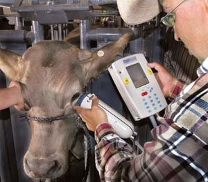

J. VICTOR ESPINOZA/NEW MEXICO STATE UNIVERSITY
Manny Encinias, livestock specialist at New Mexico State University, takes a retinal scan of a cow. Scientists in 2005 evaluated eye-scanning and radio frequency identification ear tags as part of a pilot project using New Mexico cattle.